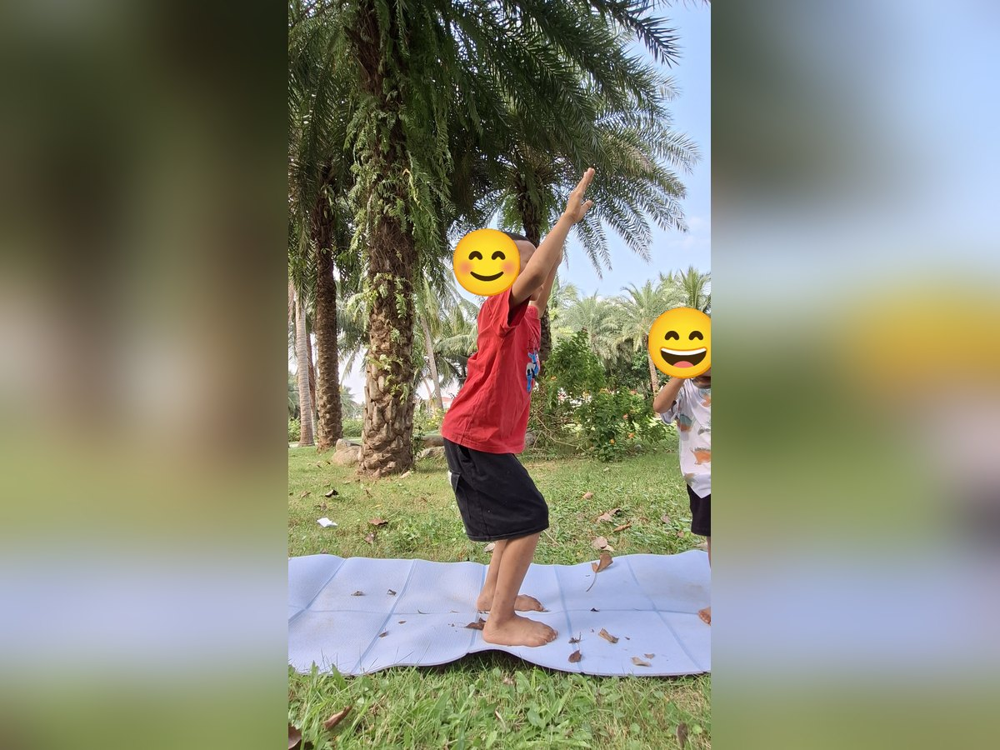
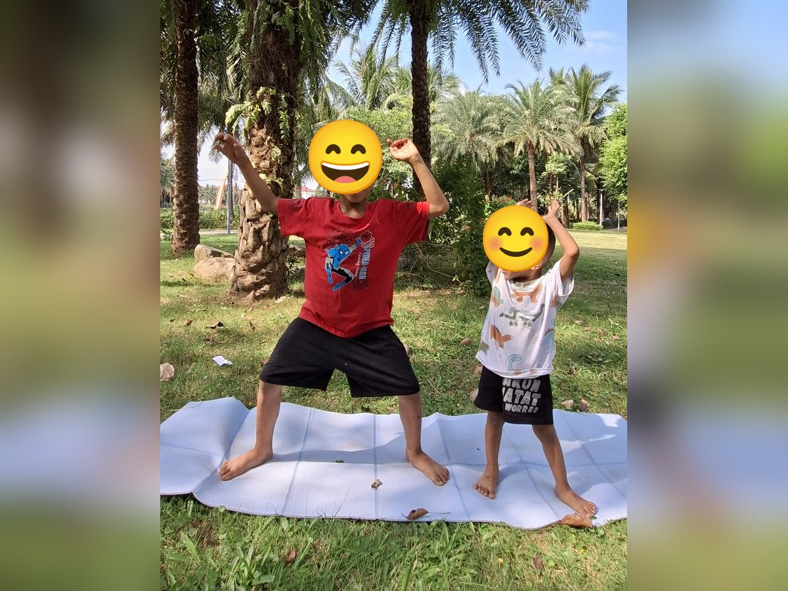

Chủ đề 50 · Cổ tích Việt Nam
Thánh Gióng và Cây khế
🌟 Bài học trong câu chuyện
Giới luật yoga: Aparigraha – Không tham, biết chia sẻ. Bé vui khi chia sẻ đồ chơi, đồ ăn với người khác.
Kỹ năng sống: Không tham lam, dũng cảm giúp người.
1. Khởi động (2 phút)
Cả lớp ngồi xếp bằng thành vòng tròn. Cùng thở 3 hơi thở bông hoa: hít vào bằng mũi như ngửi hoa, thở ra bằng miệng thật chậm. Chắp tay trước ngực và chào nhau: “Namaste, chào các bạn!”
2. Câu chuyện: Thánh Gióng và Cây khế (đọc cho bé nghe, 4 phút)
Cô đọc trọn câu chuyện cho bé nghe trước. Sau đó cô kể lại từng đoạn ngắn và cả lớp cùng tập 10 tư thế ở phần bên dưới.
Hôm nay cô kể cho các con nghe ba câu chuyện cổ tích Việt Nam.
Chuyện thứ nhất là cậu bé Gióng. Gióng ba tuổi vẫn chưa biết nói, biết cười. Khi giặc đến, Gióng bỗng cất tiếng xin đi đánh giặc. Dân làng góp gạo nuôi Gióng, Gióng vươn vai một cái thành tráng sĩ cao lớn. Gióng cưỡi ngựa sắt ra trận. Khi roi sắt gãy, Gióng nhổ những bụi tre bên đường làm vũ khí, đánh tan giặc.
Chuyện thứ hai là Sơn Tinh và Thủy Tinh. Thủy Tinh dâng nước, sóng ầm ầm. Sơn Tinh nâng núi lên cao, nước dâng bao nhiêu, núi cao bấy nhiêu. Cuối cùng Thủy Tinh đành rút về.
Chuyện thứ ba là Cây khế. Người em hiền lành có một cây khế sai quả. Một con chim thần đến ăn khế và hứa trả ơn bằng vàng: "Ăn một quả, trả cục vàng, may túi ba gang, mang đi mà đựng". Người em chỉ may túi nhỏ, lấy vừa đủ vàng, sống vui vẻ.
Người anh tham lam đổi lấy cây khế, may một chiếc túi thật to, lấy thật nhiều vàng. Túi nặng quá, chim thần bay không nổi, người anh rơi xuống biển. Các con thấy không, tham quá thì chẳng còn gì. Biết đủ thì sống bình an.
3. Kể lại và tập 10 tư thế (6 phút)
-
 1
1Thánh Gióng vươn vai
🧘 Tư thế Vươn tay lên cao (Upward Salute)
Lời kể khi tập: Cậu bé Gióng ăn cơm của cả làng, vươn vai thành tráng sĩ thật cao.
Cách làm: Đứng thẳng, hai tay vươn cao qua đầu, mắt nhìn lên, có thể kiễng nhẹ. Giữ 3 đến 5 nhịp thở.
-
 2
2Ngựa sắt
🧘 Tư thế Ngựa phi (Galloping Horse)
Lời kể khi tập: Gióng cưỡi ngựa sắt phi nhanh đi đánh giặc giúp dân làng.
Cách làm: Một chân bước dài ra trước, gập gối, chân sau duỗi thẳng, hai tay chống xuống thảm hai bên chân trước như chú ngựa đang phi. Giữ 3 đến 5 nhịp thở.
-
 3
3Bụi tre làng
🧘 Tư thế Cái cây (Tree)
Lời kể khi tập: Gióng nhổ bụi tre làm vũ khí. Mình đứng làm cây tre.
Cách làm: Đứng một chân, bàn chân kia đặt vào bắp chân hoặc đùi (không đặt lên đầu gối), hai tay chắp trên đầu. Giữ 3 đến 5 nhịp thở.
-

4Sơn Tinh nâng núi
🧘 Tư thế Cái ghế (Chair)
Lời kể khi tập: Sơn Tinh nâng núi cao để chặn nước.
Cách làm: Hai chân đứng sát nhau, gập gối như đang ngồi xuống ghế, hai tay vươn ra trước hoặc giơ cao qua đầu như trong ảnh. Giữ 3 đến 5 nhịp thở.
-
 5
5Thủy Tinh dâng sóng
🧘 Tư thế Mèo bò (Cat-Cow)
Lời kể khi tập: Thủy Tinh dâng sóng "ầm ầm".
Cách làm: Chống tay và gối, hít vào võng lưng ngẩng đầu (bò "ò ò"), thở ra cong lưng cúi đầu (mèo "meo"). Giữ 3 đến 5 nhịp thở.
-
 6
6Chim thần
🧘 Tư thế Đại bàng (Eagle)
Lời kể khi tập: Trong chuyện Cây khế, chim thần đến ăn khế và hứa trả ơn bằng vàng.
Cách làm: Đứng một chân, chân kia co lên, bàn chân móc nhẹ vào cổ chân trụ, hai tay dang rộng như đôi cánh đại bàng giữ thăng bằng. Giữ 3 đến 5 nhịp thở.
-

7Cây khế sai quả
🧘 Tư thế Nữ thần (Goddess)
Lời kể khi tập: Người em hiền lành chỉ may túi ba gang, lấy vừa đủ vàng.
Cách làm: Dang rộng hai chân, mũi chân hướng ra ngoài, gập gối, hai tay mở rộng hai bên. Giữ 3 đến 5 nhịp thở.
-
 8
8Túi ba gang
🧘 Tư thế Ôm gối tròn (Ball)
Lời kể khi tập: Người em may chiếc túi nhỏ ba gang, lấy vừa đủ vàng. Mình cuộn tròn như chiếc túi nhỏ.
Cách làm: Ngồi hoặc nằm, ôm hai gối sát vào ngực, cuộn tròn người như quả bóng. Giữ 3 đến 5 nhịp thở.
-
 9
9Người anh rơi xuống biển
🧘 Tư thế Con cá (Fish)
Lời kể khi tập: Người anh may túi thật to, tham quá nên rơi xuống biển. Mình làm con cá dưới biển.
Cách làm: Nằm ngửa, kê viên gạch dưới lưng và dưới đầu (hoặc đặt hai tay dưới mông), ưỡn ngực mở rộng, tay chân thả lỏng như chú cá nằm trên mặt nước. Giữ 3 đến 5 nhịp thở.
-
 10
10Sống bình an
🧘 Tư thế Ngồi xếp bằng (Easy Pose)
Lời kể khi tập: Người em sống vui vẻ, bình an. Mình ngồi xếp bằng, thở chậm và mỉm cười.
Cách làm: Ngồi xếp bằng, lưng thẳng, hai tay đặt nhẹ trên đầu gối. Giữ 3 đến 5 nhịp thở.
4. Thư giãn (2 phút)
Các con nằm ngửa, tay chân thả lỏng, nhắm mắt lại. Cô nói nhẹ: “Hít vào thật chậm… thở ra thật chậm… Con nhớ lại câu chuyện vừa rồi, nhớ người bạn mình thích nhất trong truyện. Cơ thể con mềm như bông, nhẹ như mây.” Sau đó các con nghiêng người, từ từ ngồi dậy.
5. Trò chuyện cùng bé (1 phút)
Người em trong Cây khế chỉ lấy vừa đủ nên được bình an. Không tham là Aparigraha.
Cô hỏi các con:
- Người em may túi to hay nhỏ?
- Vì sao không nên tham lam?
Kết thúc bằng lời chào “Namaste” và một nụ cười.
Lưu ý cho thầy cô và bố mẹ: Tập trên thảm, không tập ngay sau khi ăn no. Bé chỉ làm tới mức thấy dễ chịu, không ép bé. Tư thế đứng một chân có thể cho bé vịn tường hoặc vịn tay người lớn.